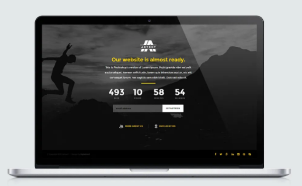
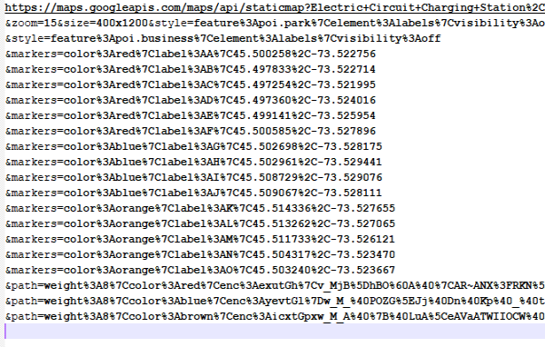
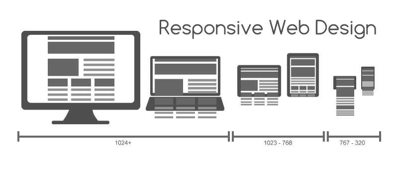

As a team of experts in website development, we create professional websites, and also fix problematic ones. According to your preferences, we can create a website tailor-made for you or your organization. Clients may also provide us with any problematic or outdated websites that require fixing, while we make sure that your favorite style or elements of the webpage is retained.
 According to your preference, your website can be made responsive for mobile devices and desktop. Considering accessibility, websites that our team create are fully compliant with WCAG 2.0 guidelines, which is the international standard for web accessibility. This includes the proper use of color, incorporation of text content, and sufficient assistance for input.
Our team is well-versed in various web development languages. Easy to navigate, beautiful appearance, and smooth interactivity are our key principles in developing a website. In doing so, we adopt research-based considerations, including introducing a visual hierarchy, a careful use of color, standardizing page layouts and keeping things simple.
|
HTML stands for HyperText Markup Language. It is the building block of the website: all the main content goes here. |
CSS stands for Cascading Style Sheet. It beautifies the website through organization of content and symbolization. |
JS stands for JavaScript. It makes the website interesting by adding elements of interactivity. |
Strict quality assurance and quality control process is applied to our website development process, where codes are error-free.